December 2021
These are the notes I made when trying to first understand how Tidal Cycles works.
This isn’t about making sound! It’s about trying to fundamentally understand the expressions and values to have a good basis going forward, and about getting started writing your own Tidal libraries. If you’re a musician and you just want to make music with Tidal, you don’t need this information.
This document ended up being more elaborate than I’d originally intended. It gives an overview of Tidal’s types and core APIs, shows how to run it as a library from ghci, and explores some of its concepts. I think the main contributions here are a relatively thorough survey of the core code, the working code examples to try and to modify, and the diagrams. Hopefully it will be helpful for developers trying to understand Tidal.
MacOS | Tidal Cycles
https://tidalcycles.org/docs/getting-started/macos_install
I tried installing a few different times in a few different ways, and the method I preferred was the following:
ghcup (https://www.haskell.org/ghcup/)
ghc with ghcup$HOME/.ghcup/bin:$HOME/.ghcup/ghc/8.10.7/bin to $PATH in .bashrccabal with ghcupcabal updatecabal install tidal --libNB: THIS IS NOT SUFFICIENT TO MAKE SOUND!! I’m only interested in executing expressions and inspecting types at this stage. Look at the installation instructions on tidalcycles.org for installing SuperCollider, SuperDirt and a compatible text editor, which are all required for a typical install.
I initially had linker errors when compiling Haskell code. What I had to do was uninstall ghc and cabal, uninstall all of my homebrew programs, reinstall ghc and cabal, and then it worked. (It was fine to reinstall homebrew for me since there was a lot of cruft left around that I’d just kept upgrading over several years and OS versions.)
The --lib part is important. That makes it possible to run import Sound.Tidal.Context in ghci.
You can delete .ghc, .ghcup and .cabal to start over from scratch if you’re trying to debug install problems.
You can also use stack:
stack setup
~/.stack/global-project/stack.yaml: resolver: lts-18.13~/.stack/programs/x86_64-osx/ghc-8.10.7/bin/ghc
stack pathstack ghc or stack ghcistack install --no-library-stripping tidalYou can blow away ~/.stack to reset your install for fixing installation problems.
--no-library-stripping is important, since it’s needed to import Tidal inside a ghci session.
I also installed diagrams for making the diagrams. (You don’t need to do this.)
cabal install diagrams-core --libcabal install diagrams-lib --libcabal install diagrams-svg --libcabal install palette --libstack install --no-library-stripping diagrams-corestack install --no-library-stripping diagrams-libstack install --no-library-stripping diagrams-svgstack install --no-library-stripping paletteI couldn’t install the top-level diagrams library since I don’t think it worked with the --lib flag. (I would have to confirm that detail, though.)
$ ghci
GHCi, version 8.10.7: https://www.haskell.org/ghc/ :? for help
Loaded package environment from /.../.ghc/x86_64-darwin-8.10.7/environments/default
Prelude> import Sound.Tidal.Context
Prelude Sound.Tidal.Context> tidal_version
"1.7.8"This seems to work in the online examples but not in ghci:
Prelude Sound.Tidal.Context> s $ "bd bd bd"
<interactive>:3:5: error:
• Couldn't match expected type ‘Pattern String’
with actual type ‘[Char]’
• In the second argument of ‘($)’, namely ‘"bd bd bd"’
In the expression: s $ "bd bd bd"
In an equation for ‘it’: it = s $ "bd bd bd"
It needs parseBP_E, which is automatically, silently added when running from the text editor. In a normal ghci:
Prelude Sound.Tidal.Context> s $ parseBP_E "bd bd bd"
(0>⅓)|s: "bd"
(⅓>⅔)|s: "bd"
(⅔>1)|s: "bd"
You can turn on the implicit string handling with {-# language OverloadedStrings #-}, or the equivalent :set -XOverloadedStrings in ghci (see Waldmann article below).
GHCi, version 8.10.7: https://www.haskell.org/ghc/ :? for help
Loaded package environment from /.../.ghc/x86_64-darwin-8.10.7/environments/default
Prelude> import Sound.Tidal.Context
Prelude Sound.Tidal.Context> :set -XOverloadedStrings
Prelude Sound.Tidal.Context> s $ "bd bd bd"
(0>⅓)|s: "bd"
(⅓>⅔)|s: "bd"
(⅔>1)|s: "bd"
OverloadedStrings is described at https://ghc.gitlab.haskell.org/ghc/doc/users_guide/exts/overloaded_strings.html . I’d prefer not to use it right now since I’m explicitly trying to figure out the types and to understand the core definitions.
Core.hsThe basic functions for making patterns are in Pattern.hs, Core.hs and UI.hs (as far as I can tell).
Almost all the examples you see start from Tidal’s pattern mini-language (like s $ "a b c"), but that’s not necessary for making patterns and it’s outside the core functionality. I’m going to start by surveying some of the basic API in Core.hs.
There is API documentation online starting at https://tidalcycles.org/docs/patternlib/tour/concatenation. (See “Small Reference” at the left.)
A pattern is something you can query to get a list of events. Events have extents in time and can carry an arbitrary kind of data. From Pattern.hs:
data Pattern a = Pattern {query :: State -> [Event a]}
type Event a = EventF (ArcF Time) aThe most basic pattern is made via pure:
Prelude Sound.Tidal.Context> pure "eventcontents" :: Pattern String
(0>1)|"eventcontents"
So this is a pattern that has one event per cycle, and the event’s contents are the string "eventcontents".
A cycle is some amount of time, like a bar, or say four bars of music. You can set it to whatever you want, but it’s the basic sync period for a loop.
You can make an empty pattern with silence (Core.hs), which is just an alias for empty (Pattern.hs).
Prelude Sound.Tidal.Context> silence
Prelude Sound.Tidal.Context> :t silence
silence :: Pattern a
(There are no events to print.)
You can use fromList (Core.hs) to make a pattern where each list item corresponds to an event with length one cycle:
Prelude Sound.Tidal.Context> pat = fromList ["phi", "psi" , "tau"]
Prelude Sound.Tidal.Context> pat
(0>1)|"phi"
Prelude Sound.Tidal.Context> putStrLn $ showAll (Arc 0 3) pat
[](0>1)|"phi"
[](1>2)|"psi"
[](2>3)|"tau"
Prelude Sound.Tidal.Context> :t pat
pat :: Pattern [Char]

showAll from Show.hs takes an Arc argument, so we can print the pattern over more than one cycle.
Use fastFromList (Core.hs) to make a pattern that squeezes each list item into one cycle:
Prelude Sound.Tidal.Context> pat = fastFromList ["phi", "psi" , "tau"]
Prelude Sound.Tidal.Context> pat
(0>⅓)|"phi"
(⅓>⅔)|"psi"
(⅔>1)|"tau"
Prelude Sound.Tidal.Context> :t pat
pat :: Pattern [Char]

We can also draw the pattern on a circle to reflect its cyclical nature:
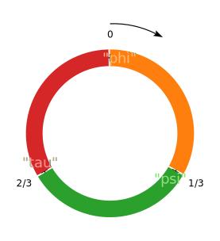
listToPat is a synonym from fastFromList.
fromMaybes allows you to put gaps in the pattern:
Prelude Sound.Tidal.Context> pat = fromMaybes [Just "phi", Nothing, Just "tau"]
Prelude Sound.Tidal.Context> pat
(0>⅓)|"phi"
(⅔>1)|"tau"
Prelude Sound.Tidal.Context> :t pat
pat :: Pattern [Char]

append alternates between cycles of two patterns.
Prelude Sound.Tidal.Context> pat = append (fromList ['a', 'j']) (fromList ['c', 'k'])
Prelude Sound.Tidal.Context> putStrLn $ showAll (Arc 0 8) pat
[](0>1)|'a'
[](1>2)|'c'
[](2>3)|'j'
[](3>4)|'k'
[](4>5)|'a'
[](5>6)|'c'
[](6>7)|'j'
[](7>8)|'k'
Prelude Sound.Tidal.Context> :t pat
pat :: Pattern Char
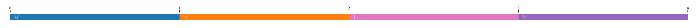
cat alternates between cycles of several patterns.
Prelude Sound.Tidal.Context> pat = cat [fromList ['a', 'j'], fromList ['c', 'k'], fromList ['e', 'l']]
Prelude Sound.Tidal.Context> putStrLn $ showAll (Arc 0 8) pat
[](0>1)|'a'
[](1>2)|'c'
[](2>3)|'e'
[](3>4)|'j'
[](4>5)|'k'
[](5>6)|'l'
[](6>7)|'a'
[](7>8)|'c'
Prelude Sound.Tidal.Context> :t pat
pat :: Pattern Char
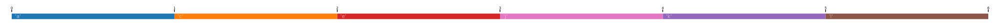
slowCat and slowcat (lowercase) are aliases for cat.
fastCat (also fastcat), works like cat but squeezes all the patterns into one cycle
Prelude Sound.Tidal.Context> pat = fastCat [fromList ['a', 'j'], fromList ['c', 'k'], fromList ['e', 'l']]
Prelude Sound.Tidal.Context> putStrLn $ showAll (Arc 0 3) pat
[](0>⅓)|'a'
[](⅓>⅔)|'c'
[](⅔>1)|'e'
[](1>1⅓)|'j'
[](1⅓>1⅔)|'k'
[](1⅔>2)|'l'
[](2>2⅓)|'a'
[](2⅓>2⅔)|'c'
[](2⅔>3)|'e'
Prelude Sound.Tidal.Context> :t pat
pat :: Pattern Char
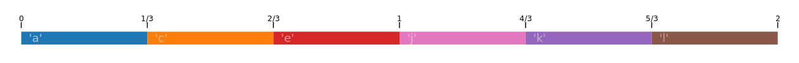
timeCat takes patterns and squeezes them into parts of a cycle. The time argument for each pattern is its relative duration.
Prelude Sound.Tidal.Context> timeCat [(1, fastFromList ['a', 'b']), (2, fastFromList ['c', 'd', 'e'])]
(0>⅙)|'a'
(⅙>⅓)|'b'
(⅓>⁵₉)|'c'
(⁵₉>⁷₉)|'d'
(⁷₉>1)|'e'
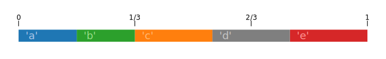
You could imagine using this for creating events of arbitrary lengths.
overlay superimposes two patterns, playing them in parallel.
Prelude Sound.Tidal.Context> overlay (fastFromList ['a', 'b', 'c', 'd']) (fastFromList ['j', 'k', 'l'])
(0>¼)|'a'
(0>⅓)|'j'
(¼>½)|'b'
(⅓>⅔)|'k'
(½>¾)|'c'
(⅔>1)|'l'
(¾>1)|'d'
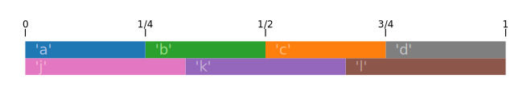
stack superimposes a list of patterns.
Prelude Sound.Tidal.Context> stack [pure 'a', fastFromList ['j', 'k', 'l'], fromList ['m', 'n']]
(0>⅓)|'j'
(0>1)|'a'
(0>1)|'m'
(⅓>⅔)|'k'
(⅔>1)|'l'

fast speeds things up
Prelude Sound.Tidal.Context> fast 3 $ fastFromList ['a', 'b', 'c']
(0>⅑)|'a'
(⅑>²₉)|'b'
(²₉>⅓)|'c'
(⅓>⁴₉)|'a'
(⁴₉>⁵₉)|'b'
(⁵₉>⅔)|'c'
(⅔>⁷₉)|'a'
(⁷₉>⁸₉)|'b'
(⁸₉>1)|'c'
Prelude Sound.Tidal.Context> drawLine $ fast 3 $ fastFromList ['a', 'b', 'c']
[7 cycles]
|abcabcabc|abcabcabc|abcabcabc|abcabcabc|abcabcabc|abcabcabc|abcabcabc

drawLine is a utility function from Show.hs that renders out a Pattern Char as ascii art. It only works on char patterns!
slow elongates (i.e., slows down) a pattern
Prelude Sound.Tidal.Context> slow 2 $ fastFromList ['a', 'a', 'b', 'c']
(0>½)|'a'
(½>1)|'a'
Prelude Sound.Tidal.Context> drawLine $ slow 2 $ fastFromList ['a', 'a', 'b', 'c']
[26 cycles]
|aa|bc|aa|bc|aa|bc|aa|bc|aa|bc|aa|bc|aa|bc|aa|bc|aa|bc|aa|bc|aa|bc|aa|bc|aa|bc

fastGap speeds things up but aligns to the cycle
Prelude Sound.Tidal.Context> fastGap 3 $ fastFromList ['a', 'b', 'c']
(0>⅑)|'a'
(⅑>²₉)|'b'
(²₉>⅓)|'c'
Prelude Sound.Tidal.Context> drawLine $ fastGap 3 $ fastFromList ['a', 'b', 'c']
[7 cycles]
|abc......|abc......|abc......|abc......|abc......|abc......|abc......

compress squeezes a pattern into a given arc of time
Prelude Sound.Tidal.Context> compress (1/4,1/2) $ fastFromList ['a', 'b', 'c']
(¼>⅓)|'a'
(⅓>5/12)|'b'
(5/12>½)|'c'
Prelude Sound.Tidal.Context> drawLine $ compress (1/4,1/2) $ fastFromList ['a', 'b', 'c']
[6 cycles]
|...abc......|...abc......|...abc......|...abc......|...abc......|...abc......

zoom zooms in on a portion of a pattern. It maps the zoomed portion to the duration of the input pattern.
Prelude Sound.Tidal.Context> zoom (1/4,3/4) $ fastFromList ['a', 'b', 'c']
-1½-(0>⅙)|'a'
(⅙>⅚)|'b'
(⅚>1)-1½|'c'
Prelude Sound.Tidal.Context> drawLine $ zoom (1/4,3/4) $ fastFromList ['a', 'b', 'c']
[11 cycles]
|a----c|a----c|a----c|a----c|a----c|a----c|a----c|a----c|a----c|a----c|a----c
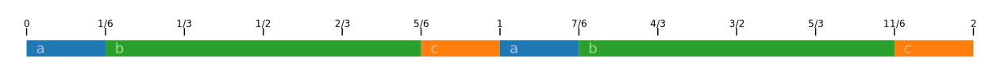
(I don’t know why the “b” event isn’t shown in the drawLine output above.)
rev reverses each cycle of a pattern
Prelude Sound.Tidal.Context> rev $ slow 2 $ fromMaybes [Just 'a', Nothing, Just 'b', Nothing, Nothing, Just 'c']
(0>⅓)|'b'
(⅔>1)|'a'
Prelude Sound.Tidal.Context> drawLine $ rev $ slow 2 $ fromMaybes [Just 'a', Nothing, Just 'b', Nothing, Nothing, Just 'c']
[19 cycles]
|b.a|c..|b.a|c..|b.a|c..|b.a|c..|b.a|c..|b.a|c..|b.a|c..|b.a|c..|b.a|c..|b.a
Input (slow 2 $ fromMaybes [Just 'a', Nothing, Just 'b', Nothing, Nothing, Just 'c']):

Output (rev $ slow 2 $ fromMaybes [Just 'a', Nothing, Just 'b', Nothing, Nothing, Just 'c']):
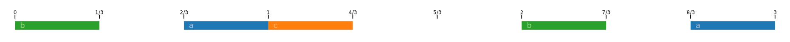
every applies a function to the input pattern, but only every n cycles.
Prelude Sound.Tidal.Context> every 3 rev $ fastFromList ['a', 'b', 'c']
(0>⅓)|'c'
(⅓>⅔)|'b'
(⅔>1)|'a'
Prelude Sound.Tidal.Context> drawLine $ every 3 rev $ fastFromList ['a', 'b', 'c']
[19 cycles]
|cba|abc|abc|cba|abc|abc|cba|abc|abc|cba|abc|abc|cba|abc|abc|cba|abc|abc|cba

The ‘n cycles’ argument is actually of type Pattern Int, so you can vary the argument over time like this:
Prelude Sound.Tidal.Context> pat = fastFromList ['a', 'b', 'c']
Prelude Sound.Tidal.Context> ints = slow 6 $ cat [2, 3]
Prelude Sound.Tidal.Context> drawLine $ every ints rev pat
[19 cycles]
|cba|abc|cba|abc|cba|abc|cba|abc|abc|cba|abc|abc|cba|abc|cba|abc|cba|abc|cba
For the first six cycles the pattern is reversed every two repetitions; for the second six cycles the pattern is reversed every three.
when applies a function when the given predicate function returns true. The predicate is fed the current cycle number.
Prelude Sound.Tidal.Context> drawLine $ when (\x -> (x+2) `mod` 3 == 0) rev (fastFromList ['a','b','c'])
[19 cycles]
|abc|cba|abc|abc|cba|abc|abc|cba|abc|abc|cba|abc|abc|cba|abc|abc|cba|abc|abc
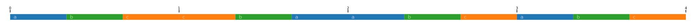
rotR shifts a pattern forward in time by a certain number of cycles.
Prelude Sound.Tidal.Context> drawLine $ rotR (1%3) (fastFromList ['a', 'b', 'c'])
[19 cycles]
|cab|cab|cab|cab|cab|cab|cab|cab|cab|cab|cab|cab|cab|cab|cab|cab|cab|cab|cab
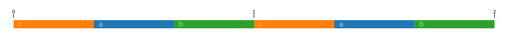
You can use rotR and fastGap to manually put an event at a particular point in time with a particular duration.
Prelude Sound.Tidal.Context> rotR (3%8) (fastGap 4 (pure 'a'))
(⅜>⅝)|'a'

Patterns can be queried over a time range, returning a list of events. The scheduler does this repeatedly over small time slices to decide when to send OSC (Open Sound Control) messages to SuperCollider. We can use this to check how our pattern will be rendered.
Each Pattern implements query:
data Pattern a = Pattern {query :: State -> [Event a]}
data State = State {arc :: Arc,
controls :: ValueMap
}You pass in a State, but for our purposes we’ll always leave controls empty. (I understand it to be the current values of any external MIDI controllers, which we don’t need.) That means query essentially goes from an Arc of time to a list of Events; that’s exactly what queryArc does:
queryArc :: Pattern a -> Arc -> [Event a]
queryArc p a = query p $ State a Map.emptyThe events that are returned have a whole and a part, which we’ll get into later.
Prelude Sound.Tidal.Context> queryArc (fromMaybes [Nothing,Just 'a', Nothing, Just 'c', Just 'd']) (Arc 0 1)
[[](⅕>⅖)|'a',[](⅗>⅘)|'c',[](⅘>1)|'d']

In this example, each of the output events has a whole, and that whole is the same as its part.
Prelude Sound.Tidal.Context> queryArc (fromMaybes [Nothing,Just 'a', Nothing, Just 'c', Just 'd']) (Arc 0 0.5)
[[](⅕>⅖)|'a']
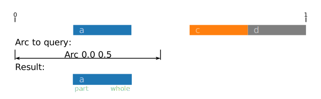
Prelude Sound.Tidal.Context> queryArc (fromMaybes [Nothing,Just 'a', Nothing, Just 'c', Just 'd']) (Arc 0 0.25)
[[](⅕>¼)-⅖|'a']
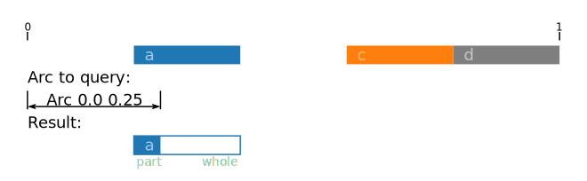
So we see here that the output Event’s whole is the entire extent of the input event that intersects with the query Arc; the part is the intersection of the query Arc and the overlapping input event.
We see (⅕>¼)-⅖ in the ghci output. The way to read this is
(⅕>¼) is the part, where the query window overlaps with the input event window,⅕ to ⅖ is the whole, and(⅕>¼)-⅖ is a representation that combines both the part and the wholePrelude Sound.Tidal.Context> queryArc (fromMaybes [Nothing,Just 'a', Nothing, Just 'c', Just 'd']) (Arc 0 0.2)
[]

Querying an arc that doesn’t overlap any pattern events returns an empty list. Note here that the right edge of the query arc touches the first pattern event.
Prelude Sound.Tidal.Context> queryArc (fromMaybes [Nothing,Just 'a', Nothing, Just 'c', Just 'd']) (Arc 0.6 0.8)
[[](⅗>⅘)|'c']

Prelude Sound.Tidal.Context> queryArc (fromMaybes [Nothing,Just 'a', Nothing, Just 'c', Just 'd']) (Arc 0.8 1.0)
[[](⅘>1)|'d']
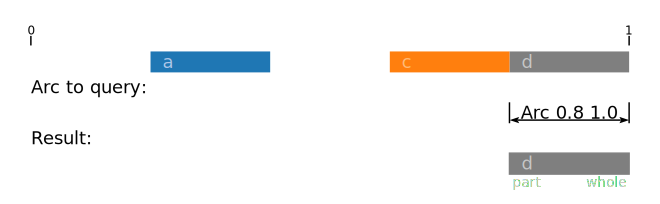
Prelude Sound.Tidal.Context> queryArc (fromMaybes [Nothing,Just 'a', Nothing, Just 'c', Just 'd']) (Arc 0.6 1.0)
[[](⅗>⅘)|'c',[](⅘>1)|'d']
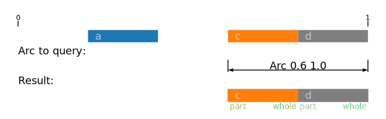
Prelude Sound.Tidal.Context> queryArc (fromMaybes [Nothing,Just 'a', Nothing, Just 'c', Just 'd']) (Arc 0.7 0.9)
[[]⅗-(7/10>⅘)|'c',[](⅘>9/10)-1|'d']
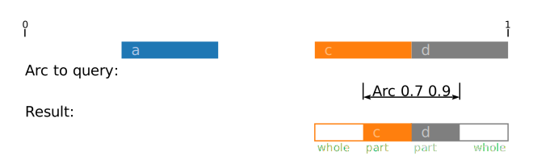
Prelude Sound.Tidal.Context> queryArc (fromMaybes [Nothing,Just 'a', Nothing, Just 'c', Just 'd']) (Arc 0.8 0.8)
[[](⅘>⅘)-1|'d']
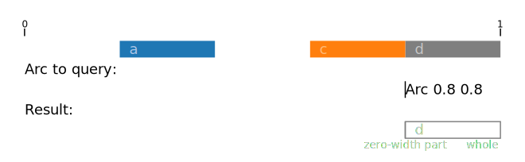
So if you query a zero-width arc right between two events, it returns only the second event (with a zero-width part).
Prelude Sound.Tidal.Context> queryArc (fromMaybes [Nothing,Just 'a', Nothing, Just 'c', Just 'd']) (Arc 0.75 0.75)
[[]⅗-(¾>¾)-⅘|'c']

Note here how the event’s extents are notated: ⅗-(¾>¾)-⅘.
Tidal also has a concept of a continuous pattern.
(This is sine from Core.hs.)
These patterns accept query like any other pattern.
Prelude Sound.Tidal.Context> queryArc sine (Arc 0.5 0.75)
[[]~½>¾~|0.14644660940672627]

Let’s look into the details to see what the query is returning and where the floating point value is coming from.
Prelude Sound.Tidal.Context> results = queryArc sine (Arc 0.5 0.75)
Prelude Sound.Tidal.Context> results
[[]~½>¾~|0.14644660940672627]
Prelude Sound.Tidal.Context> :t results
results :: Fractional a => [Event a]
Prelude Sound.Tidal.Context> length results
1
Prelude Sound.Tidal.Context> event : _ = results
Prelude Sound.Tidal.Context> :t event
event :: Fractional a => Event a
Prelude Sound.Tidal.Context> whole event
Nothing
Prelude Sound.Tidal.Context> part event
½>¾
Prelude Sound.Tidal.Context> value event
0.14644660940672627
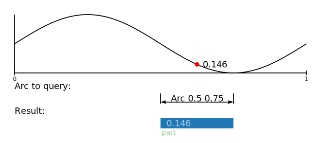
So we see that querying a continuous pattern returns events with parts and values, but no wholes.
The notation for continuous results includes tildes: ~½>¾~.
Note too that the query samples the continuous function in the middle of the query arc.
Prelude Sound.Tidal.Context> queryArc sine (Arc 0.3 0.5)
[[]~3/10>½~|0.7938926261462367]
Prelude Sound.Tidal.Context> queryArc sine (0.4 :: Arc)
[[]~⅖>⅖~|0.7938926261462367]
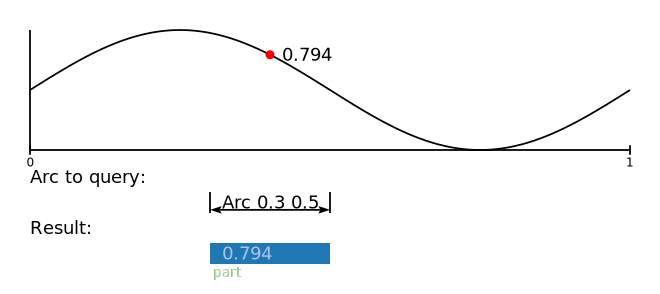
If you want to sample a continuous pattern at exactly one point, use a zero-width arc.
Prelude Sound.Tidal.Context> queryArc sine (Arc 0.22 0.22)
[[]~11/50>11/50~|0.9911436253643443]

Tidal calls continuous patterns “analog” and discrete patterns “digital”:
isAnalog :: Event a -> Bool
isAnalog (Event {whole = Nothing}) = True
isAnalog _ = False
isDigital :: Event a -> Bool
isDigital = not . isAnalog(from Pattern.hs)
Pattern.hs)We’ve seen several examples of patterns, events and queries. Hopefully that will have built up enough intuition to make sense of the basic types.
Pattern is defined in Sound/Tidal/Pattern.hs.
-- | A datatype representing events taking place over time
data Pattern a = Pattern {query :: State -> [Event a]}
deriving (Generic, Functor)A pattern is something that can be queried, returning a list of events.
An Arc is an interval of time. Time is expressed as a rational (i.e., a fraction) (defined in Sound/Tidal/Time.hs)
-- | Time is rational
type Time = Rational
-- | An arc of time, with a start time (or onset) and a stop time (or offset)
data ArcF a = Arc
{ start :: a
, stop :: a
} deriving (Eq, Ord, Functor, Show, Generic)
type Arc = ArcF TimeI think the reason it’s called an arc is that a cycle is imagined to lie on a circle. An arc is a portion of that circle.
Events are defined thusly (see Sound/Tidal/Pattern.hs):
-- | An event is a value that's active during a timespan. If a whole
-- is present, the part should be equal to or fit inside it.
data EventF a b = Event
{ context :: Context
, whole :: Maybe a
, part :: a
, value :: b
} deriving (Eq, Ord, Functor, Generic)
type Event a = EventF (ArcF Time) aSo events are understood to be boxes on the timeline with a beginning and an end, which contain a value. We also have the notion of looking at a subsection of an event, hence the whole and part distinction. whole is Maybe a, so it might be Nothing, which means that it’s from an analog (continuous) pattern.
value is, of course, the value that the event contains.
The context is apparently the position within the source code. I guess this is used when interpreting expressions in a live coding context.
There are some utility functions to access an event’s fields in Pattern.hs: isAnalog, isDigital, wholeStart, wholeStop, eventPartStart, eventPartStop, etc.
You can perform many operations on patterns as though they were numbers:
Prelude Sound.Tidal.Context> min 27 $ fastFromList [11,22,33,44]
(0>¼)|11
(¼>½)|22
(½>¾)|27
(¾>1)|27

Prelude Sound.Tidal.Context> max 27 $ fastFromList [11,22,33,44]
(0>¼)|27
(¼>½)|27
(½>¾)|33
(¾>1)|44

Prelude Sound.Tidal.Context> fastFromList [11,22,33,44] + 3
(0>¼)|14
(¼>½)|25
(½>¾)|36
(¾>1)|47

Prelude Sound.Tidal.Context> 2 * fastFromList [11,22,33,44]
(0>¼)|22
(¼>½)|44
(½>¾)|66
(¾>1)|88
Prelude Sound.Tidal.Context> mod (fastFromList [11,22,33,44]) 4
(0>¼)|3
(¼>½)|2
(½>¾)|1
(¾>1)|0
Prelude Sound.Tidal.Context> sqrt $ fastFromList [2,9,16,100]
(0>¼)|1.4142135623730951
(¼>½)|3.0
(½>¾)|4.0
(¾>1)|10.0
Neat.
What happens when we straight up add two patterns together?
Prelude Sound.Tidal.Context> fastFromList [1, 2, 3] + fastFromList [20, 40] :: Pattern Int
(0>⅓)|21
(⅓>½)|22
(½>⅔)|42
(⅔>1)|43
Tidal adds the patterns together by combining the events and values from both input patterns. Internally, Tidal does the addition via applyPatToPatBoth in Pattern.hs.
There are other addition operators that combine the events in alternate ways that call applyPatToPatLeft and applyPatToPatRight instead.
The (|+) operator is addition, taking structure (i.e., the wholes) from the left (src/Sound/Tidal/Core.hs).
Prelude Sound.Tidal.Context> fastFromList [1, 2, 3] |+ fastFromList [20, 40] :: Pattern Int
(0>⅓)|21
(⅓>½)-⅔|22
⅓-(½>⅔)|42
(⅔>1)|43

(In the text output, notice that the “22” and the “42” entries correspond to the same whole event. I understand this to mean that the value changes midway though the event, but the onset still happens at the “22” in this case. I later confirmed with oscdump and a live Tidal REPL that that’s what’s happening – the value that is lined up when the onset happens is the one that gets sent. The change midway through the event does nothing.)
Prelude Sound.Tidal.Context> fastFromList [1, 2, 3] |+ fastFromList [20, 40, 60] :: Pattern Int
(0>⅓)|21
(⅓>⅔)|42
(⅔>1)|63

Prelude Sound.Tidal.Context> fastFromList [1, 2, 3] |+ fastFromList [20, 40, 60, 80] :: Pattern Int
(0>¼)-⅓|21
0-(¼>⅓)|41
(⅓>½)-⅔|42
⅓-(½>⅔)|62
(⅔>¾)-1|63
⅔-(¾>1)|83

The +| operator does addition, but takes the events from the right argument:


The |+| operator does addition, but takes the events from both arguments:

If you use +, it’s like |+|:

There are a bunch of operators that work in the same way documented at https://tidalcycles.org/docs/patternlib/tutorials/pattern_structure.
The above are examples of Pattern’s Applicative instance, which is a Haskell thing. It allows you to apply a pattern of unary functions to a pattern of arguments.
instance Applicative Pattern where
-- | Repeat the given value once per cycle, forever
pure v = Pattern $ \(State a _) ->
map (\a' -> Event (Context []) (Just a') (sect a a') v) $ cycleArcsInArc a
(<*>) = applyPatToPatBothPrelude Sound.Tidal.Context> a = fastFromList [ (2.0*), exp, (max 7) ]
Prelude Sound.Tidal.Context> :t a
a :: (Floating a, Ord a) => Pattern (a -> a)
Prelude Sound.Tidal.Context> b = fastFromList [1, 2]
Prelude Sound.Tidal.Context> a <*> b
(0>⅓)|2.0
(⅓>½)|2.718281828459045
(½>⅔)|7.38905609893065
(⅔>1)|7.0

There are also the operators <* and *>, which take the structure from the left and right, respectively.
Prelude> import Prelude hiding ((<*), (*>))
Prelude> import Sound.Tidal.Context
Prelude Sound.Tidal.Context> a = fastFromList [ (2.0*), exp, (max 7) ]
Prelude Sound.Tidal.Context> b = fastFromList [1, 2]
Prelude Sound.Tidal.Context> a <* b
(0>⅓)|2.0
(⅓>½)-⅔|2.718281828459045
⅓-(½>⅔)|7.38905609893065
(⅔>1)|7.0
Prelude Sound.Tidal.Context> a *> b
(0>⅓)-½|2.0
0-(⅓>½)|2.718281828459045
(½>⅔)-1|7.38905609893065
½-(⅔>1)|7.0

(Only the first event contains the whole’s onset, so that’s the one that’ll get sent out via OSC.)
These operators are the more general ones that are called into by |+, +|, etc.
You can map a function over a Pattern. It’ll apply the function to that pattern’s events.
Prelude Sound.Tidal.Context> fmap abs fastFromList [ 2, -3, 1, -1, 4 ]
(0>⅕)|2
(⅕>⅖)|3
(⅖>⅗)|1
(⅗>⅘)|1
(⅘>1)|4
Prelude Sound.Tidal.Context> fmap ((+3) . (*2)) fastFromList [ 1, 2, 3, 4 ]
(0>¼)|5
(¼>½)|7
(½>¾)|9
(¾>1)|11
There are also various filter functions defined in Pattern.hs.
Prelude Sound.Tidal.Context> filterValues (> 0) $ fastFromList [ 2, -3, 1, -1, 4 ]
(0>⅕)|2
(⅖>⅗)|1
(⅘>1)|4
See filterJust, filterWhen, filterOnsets, filterEvents, etc.
You can of course define patterns of patterns as well.
Prelude Sound.Tidal.Context> pat = fastFromList [ fastFromList ['a','b','c'], fastFromList ['d','e'] ]
Prelude Sound.Tidal.Context> pat
(0>½)|(0>⅓)|'a'
(⅓>⅔)|'b'
(⅔>1)|'c'
(½>1)|(0>½)|'d'
(½>1)|'e'
Prelude Sound.Tidal.Context> :t pat
pat :: Pattern (Pattern Char)
The way to read this is that there’s one event on (0>½) that contains the first pattern, and there’s a second event on (½>1) that contains the second pattern.
You can use unwrap if you want to flatten the patterns:
Prelude Sound.Tidal.Context> pat = unwrap $ fastFromList [ fastFromList ['a','b','c'], fastFromList ['j','k','l','m'] ]
Prelude Sound.Tidal.Context> pat
(0>⅓)|'a'
(⅓>½)|'b'
(½>¾)|'l'
(¾>1)|'m'
Prelude Sound.Tidal.Context> :t pat
pat :: Pattern Char

So this is allowing the inner patterns to shine through the windows defined by the events they’re contained in. The wholes and the parts are cleaned up so that they’re coincident for every event.
innerJoin flattens the pattern but takes the structure from the inner pattern.
Prelude Sound.Tidal.Context> innerJoin $ fastFromList [ fastFromList ['a','b','c'], fastFromList ['j','k','l','m'] ]
(0>⅓)|'a'
(⅓>½)-⅔|'b'
(½>¾)|'l'
(¾>1)|'m'
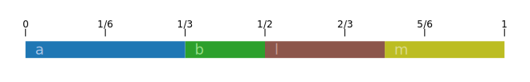
The events are defined by the inner patterns over the entire cycle, and those windowed by the outer events they’re contained in. This looks like the unwrap case, but the wholes from the inner pattern are preserved in the output events.
We can emulate this with queryArc to help understand what innerJoin is doing:
Prelude Sound.Tidal.Context> queryArc (fastFromList ['a','b','c']) (Arc 0 0.5) ++ queryArc (fastFromList ['j','k','l','m']) (Arc 0.5 1)
[[](0>⅓)|'a',[](⅓>½)-⅔|'b',[](½>¾)|'l',[](¾>1)|'m']
outerJoin flattens the pattern but takes the structure from the outer pattern.
Prelude Sound.Tidal.Context> outerJoin $ fastFromList [ fastFromList ['a','b','c'], fastFromList ['j','k','l','m'] ]
(0>½)|'a'
(½>1)|'l'
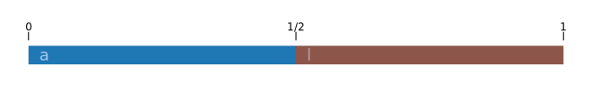
Note that the wholes come from the outer pattern.
Finally, there’s squeezeJoin, which compresses each of the inner patterns into the event they’re contained in.
Prelude Sound.Tidal.Context> squeezeJoin $ fastFromList [ fastFromList ['a','b','c'], fastFromList ['j','k','l','m'] ]
(0>⅙)|'a'
(⅙>⅓)|'b'
(⅓>½)|'c'
(½>⅝)|'j'
(⅝>¾)|'k'
(¾>⅞)|'l'
(⅞>1)|'m'
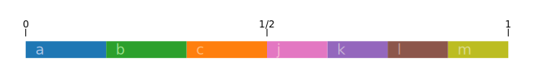
Since patterns basically only provide a query function, you can write one yourself instead of using the API we’ve explored so far.
Here’s a trivial example:
Prelude Sound.Tidal.Context> pat = Pattern { query = \s -> [] }
Prelude Sound.Tidal.Context> queryArc pat (Arc 0 1)
[]
Prelude Sound.Tidal.Context> queryArc pat (Arc 1 100)
[]
Prelude Sound.Tidal.Context> queryArc pat (Arc 7 7)
[]
(empty is defined as empty = Pattern {query = const []} in Pattern.hs.)
Set the value from the query arc’s start time:
Prelude Sound.Tidal.Context> pat = Pattern { query = \(State a ctrls) -> [Event (Context []) (Just a) a (fromRational $ start a :: Double)] }
Prelude Sound.Tidal.Context> queryArc pat (Arc 0 1)
[[](0>1)|0.0]
Prelude Sound.Tidal.Context> queryArc pat (Arc 1 100)
[[](1>100)|1.0]
Prelude Sound.Tidal.Context> queryArc pat (Arc 7 7)
[[](7>7)|7.0]
Return events whose value is the cycle number:
Prelude Sound.Tidal.Context> :{
Prelude Sound.Tidal.Context| pat = Pattern { query = \(State a _) ->
Prelude Sound.Tidal.Context| map
Prelude Sound.Tidal.Context| (\cyclearc -> Event
Prelude Sound.Tidal.Context| (Context [])
Prelude Sound.Tidal.Context| (Just cyclearc)
Prelude Sound.Tidal.Context| (sect a cyclearc)
Prelude Sound.Tidal.Context| (fromRational $ sam $ start cyclearc :: Double))
Prelude Sound.Tidal.Context| (cycleArcsInArc a) }
Prelude Sound.Tidal.Context| :}
Prelude Sound.Tidal.Context> queryArc pat (Arc 0 3)
[[](0>1)|0.0,[](1>2)|1.0,[](2>3)|2.0]
Prelude Sound.Tidal.Context> queryArc pat (Arc 5 9)
[[](5>6)|5.0,[](6>7)|6.0,[](7>8)|7.0,[](8>9)|8.0]
Prelude Sound.Tidal.Context> queryArc pat (Arc 7.5 9.5)
[[]7-(7½>8)|7.0,[](8>9)|8.0,[](9>9½)-10|9.0]
(The :{ and :} lines are for ghci, to have the definition span multiple lines.)
A pattern with zero events in the zeroth cycle, one event in the first, two events in the second, etc.:
Prelude Sound.Tidal.Context> :{
Prelude Sound.Tidal.Context| pat = Pattern { query = \s ->
Prelude Sound.Tidal.Context| let
Prelude Sound.Tidal.Context| subpattern :: Int -> Pattern Int
Prelude Sound.Tidal.Context| subpattern = \i -> fast (fromIntegral i) $ pure i
Prelude Sound.Tidal.Context| outterpattern :: Pattern (Pattern Int)
Prelude Sound.Tidal.Context| outterpattern = fromList $ map subpattern [0,1..5]
Prelude Sound.Tidal.Context| in
Prelude Sound.Tidal.Context| query (unwrap outterpattern) s }
Prelude Sound.Tidal.Context| :}
Prelude Sound.Tidal.Context> queryArc pat (Arc 0 7)
[[](1>2)|1,[](2>2½)|2,[](2½>3)|2,[](3>3⅓)|3,[](3⅓>3⅔)|3,[](3⅔>4)|3,[](4>4¼)|4,[](4¼>4½)|4,[](4½>4¾)|4,[](4¾>5)|4,[](5>5⅕)|5,[](5⅕>5⅖)|5,[](5⅖>5⅗)|5,[](5⅗>5⅘)|5,[](5⅘>6)|5]
And so on.
(This last example can be done in a one-liner with pat = unwrap (fromList $ map (\i -> fast (fromIntegral i) $ pure i) [0,1..5]); going through the query here is actually unnecessary, but you get the idea)
The part for each event must fit inside its whole.
These functions are executed every time the pattern is queried. They shouldn’t be computationally expensive so they can be rendered in real time. Also, it seems that you can’t rely on them being lazily evaluated (there seems to be be some strictness somewhere during evaluation). Using [0..] above instead of [0,1..5] hung ghci for me.
You can put a long function expression in a text file with a .hs extension and load it in a ghci session using :load and :reload (:l and :r).
So this is sort of the main event. Tidal includes a “mini-notation” for succinctly specifying patterns as text strings. Most of the examples you see will start with this format.
It’s functionality that sits on top of Sound.Tidal.Pattern and Sound.Tidal.Core, so I felt it was less fundamental and left it until now. It’s defined in ParseBP.hs.
So as we saw in ‘Starting to look at some expressions’ above, expressions like s "bd ~ bd ~" don’t work in ghci by default. You need to add parseBP_E or turn on implicit string handling with :set -XOverloadedStrings. This will be already turned on in Tidal proper. For the examples here I’ll include parseBP_E explicitly for the sake of understanding and driving the point home.
See https://tidalcycles.org/docs/patternlib/tutorials/mini_notation for further notes on the syntax more examples.
So the most basic pattern just lists the event values in a string. They’re compressed into one cycle, like with fastFromList.
Prelude Sound.Tidal.Context> parseBP_E "a b c" :: Pattern Char
(0>⅓)|'a'
(⅓>⅔)|'b'
(⅔>1)|'c'
Prelude Sound.Tidal.Context> drawLine $ parseBP_E "a b c"
[19 cycles]
|abc|abc|abc|abc|abc|abc|abc|abc|abc|abc|abc|abc|abc|abc|abc|abc|abc|abc|abc
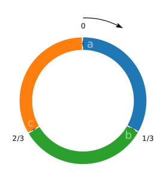
There are some things to note here. The type of the values is inferred from the outer type annotation. To wit:
Prelude Sound.Tidal.Context> :set +t
Prelude Sound.Tidal.Context> parseBP_E "1 2 3" :: Pattern Double
(0>⅓)|1.0
(⅓>⅔)|2.0
(⅔>1)|3.0
it :: Pattern Double
Prelude Sound.Tidal.Context> parseBP_E "1 2 3" :: Pattern Char
(0>⅓)|'1'
(⅓>⅔)|'2'
(⅔>1)|'3'
it :: Pattern Char
Prelude Sound.Tidal.Context> parseBP_E "1 2 3" :: Pattern Int
(0>⅓)|1
(⅓>⅔)|2
(⅔>1)|3
it :: Pattern Int
Prelude Sound.Tidal.Context> parseBP_E "1 0 0 1" :: Pattern Bool
(0>¼)|True
(¼>½)|False
(½>¾)|False
(¾>1)|True
it :: Pattern Bool
If you don’t give a type hint, it’ll fall back to a default type for the values.
Prelude Sound.Tidal.Context> parseBP_E "e f g"
(0>⅓)|4
(⅓>⅔)|5
(⅔>1)|7
it :: (Enumerable a, Parseable a) => Pattern a
If you omit the type hint some characters just don’t work.
Prelude Sound.Tidal.Context> parseBP_E "j k l" :: Pattern Char
(0>⅓)|'j'
(⅓>⅔)|'k'
(⅔>1)|'l'
it :: Pattern Char
Prelude Sound.Tidal.Context> parseBP_E "j k l"
*** Exception: Syntax error in sequence:
"j k l"
^
unexpected 'j'
expecting white space, "-", "+", number, "c", "d", "e", "f", "g", "a", "b", "'", rest, "[", "{", "<", "^", ".", "?" or end of input
Also, drawLine expects a pattern of type Pattern Char. So you can’t use it to show patterns of strings, for example.
Onward with more mini-notation. Tilde is a rest:
Prelude Sound.Tidal.Context> parseBP_E "b ~ b ~" :: Pattern Char
(0>¼)|'b'
(½>¾)|'b'
Prelude Sound.Tidal.Context> drawLine $ parseBP_E "b ~ b ~"
[15 cycles]
|b.b.|b.b.|b.b.|b.b.|b.b.|b.b.|b.b.|b.b.|b.b.|b.b.|b.b.|b.b.|b.b.|b.b.|b.b.
So a dot in the drawLine output is a rest.

Underscore elongates a note:
Prelude Sound.Tidal.Context> parseBP_E "a _ c" :: Pattern Char
(0>⅔)|'a'
(⅔>1)|'c'
Prelude Sound.Tidal.Context> drawLine $ parseBP_E "a _ c"
[19 cycles]
|a-c|a-c|a-c|a-c|a-c|a-c|a-c|a-c|a-c|a-c|a-c|a-c|a-c|a-c|a-c|a-c|a-c|a-c|a-c
A hyphen in the drawLine output means that a note is held for an extra division.

@ elongates a pattern by some number of counts:
Prelude Sound.Tidal.Context> parseBP_E "a@3 b" :: Pattern Char
(0>¾)|'a'
(¾>1)|'b'
Prelude Sound.Tidal.Context> drawLine $ parseBP_E "a@3 b"
[15 cycles]
|a--b|a--b|a--b|a--b|a--b|a--b|a--b|a--b|a--b|a--b|a--b|a--b|a--b|a--b|a--b

Repeat an event with * . Notice how it takes the time the event would have taken and subdivides that:
Prelude Sound.Tidal.Context> parseBP_E "a*2 c" :: Pattern Char
(0>¼)|'a'
(¼>½)|'a'
(½>1)|'c'
Prelude Sound.Tidal.Context> drawLine $ parseBP_E "a*2 c"
[15 cycles]
|aac-|aac-|aac-|aac-|aac-|aac-|aac-|aac-|aac-|aac-|aac-|aac-|aac-|aac-|aac-
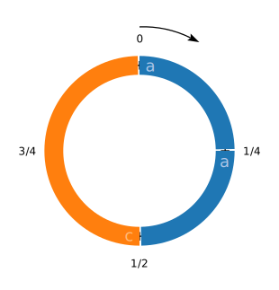
So instead of getting the cycle divided into three, it’s divided into four. The ‘a’ events have duration 1/4.
Use ! to repeat an event. Contrast this with * .
Prelude Sound.Tidal.Context> parseBP_E "a!2 c" :: Pattern Char
(0>⅓)|'a'
(⅓>⅔)|'a'
(⅔>1)|'c'
Prelude Sound.Tidal.Context> drawLine $ parseBP_E "a!2 c"
[19 cycles]
|aac|aac|aac|aac|aac|aac|aac|aac|aac|aac|aac|aac|aac|aac|aac|aac|aac|aac|aac
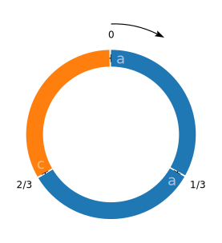
The ‘a’ events have duration 1/3 here.
Use square brackets for grouping.
Prelude Sound.Tidal.Context> parseBP_E "[a b c] [d e]" :: Pattern Char
(0>⅙)|'a'
(⅙>⅓)|'b'
(⅓>½)|'c'
(½>¾)|'d'
(¾>1)|'e'
Prelude Sound.Tidal.Context> drawLine $ parseBP_E "[a b c] [d e]"
[6 cycles]
|a-b-c-d--e--|a-b-c-d--e--|a-b-c-d--e--|a-b-c-d--e--|a-b-c-d--e--|a-b-c-d--e--
So it divided the pattern into two halves, and then divided the first half into three and the second half into two.

You can do the same with a dot:
Prelude Sound.Tidal.Context> parseBP_E "a b c . d e" :: Pattern Char
(0>⅙)|'a'
(⅙>⅓)|'b'
(⅓>½)|'c'
(½>¾)|'d'
(¾>1)|'e'
Prelude Sound.Tidal.Context> drawLine $ parseBP_E "a b c . d e"
[6 cycles]
|a-b-c-d--e--|a-b-c-d--e--|a-b-c-d--e--|a-b-c-d--e--|a-b-c-d--e--|a-b-c-d--e--

Use a comma to play two patterns in parallel. Apparently you need the square brackets as well.
Prelude Sound.Tidal.Context> parseBP_E "[a b c , d e]" :: Pattern Char
(0>⅓)|'a'
(0>½)|'d'
(⅓>⅔)|'b'
(½>1)|'e'
(⅔>1)|'c'
Prelude Sound.Tidal.Context> drawLine $ parseBP_E "[a b c , d e]"
[11 cycles]
|a-b-c-|a-b-c-|a-b-c-|a-b-c-|a-b-c-|a-b-c-|a-b-c-|a-b-c-|a-b-c-|a-b-c-|a-b-c-
|d--e--|d--e--|d--e--|d--e--|d--e--|d--e--|d--e--|d--e--|d--e--|d--e--|d--e--
The first expression’s output orders the interleaved events by onset time.

You can create polymetric sequences with braces:
Prelude Sound.Tidal.Context> parseBP_E "{a b c , d e}" :: Pattern Char
(0>⅓)|'a'
(0>⅓)|'d'
(⅓>⅔)|'b'
(⅓>⅔)|'e'
(⅔>1)|'c'
(⅔>1)|'d'
Prelude Sound.Tidal.Context> drawLine $ parseBP_E "{a b c , d e}"
[19 cycles]
|abc|abc|abc|abc|abc|abc|abc|abc|abc|abc|abc|abc|abc|abc|abc|abc|abc|abc|abc
|ded|ede|ded|ede|ded|ede|ded|ede|ded|ede|ded|ede|ded|ede|ded|ede|ded|ede|ded

So it looks like it takes the first pattern and divides the cycle by the number of elements it has, and then uses that length for each element of the second pattern.
Contrast with doing it in the other order:
Prelude Sound.Tidal.Context> parseBP_E "{d e , a b c}" :: Pattern Char
(0>½)|'d'
(0>½)|'a'
(½>1)|'e'
(½>1)|'b'
Prelude Sound.Tidal.Context> drawLine $ parseBP_E "{d e , a b c}"
[26 cycles]
|de|de|de|de|de|de|de|de|de|de|de|de|de|de|de|de|de|de|de|de|de|de|de|de|de|de
|ab|ca|bc|ab|ca|bc|ab|ca|bc|ab|ca|bc|ab|ca|bc|ab|ca|bc|ab|ca|bc|ab|ca|bc|ab|ca
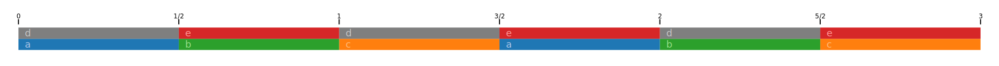
So in this second version, the ‘a b c’ events have a longer duration: putting the “d e” first divides the cycle in two, and so the “a b c” pattern repeats every 1.5 cycles.
You can set the length of the polymetric sequence with %.
This expression divides the cycle into eight:
Prelude Sound.Tidal.Context> parseBP_E "{a b c d e}%8" :: Pattern Char
(0>⅛)|'a'
(⅛>¼)|'b'
(¼>⅜)|'c'
(⅜>½)|'d'
(½>⅝)|'e'
(⅝>¾)|'a'
(¾>⅞)|'b'
(⅞>1)|'c'
Prelude Sound.Tidal.Context> drawLine $ parseBP_E "{a b c d e}%8"
[8 cycles]
|abcdeabc|deabcdea|bcdeabcd|eabcdeab|cdeabcde|abcdeabc|deabcdea|bcdeabcd

This expression divides the cycle into seven.
Prelude Sound.Tidal.Context> parseBP_E "{a b c d e}%7" :: Pattern Char
(0>⅐)|'a'
(⅐>²₇)|'b'
(²₇>³₇)|'c'
(³₇>⁴₇)|'d'
(⁴₇>⁵₇)|'e'
(⁵₇>⁶₇)|'a'
(⁶₇>1)|'b'
Prelude Sound.Tidal.Context> drawLine $ parseBP_E "{a b c d e}%7"
[9 cycles]
|abcdeab|cdeabcd|eabcdea|bcdeabc|deabcde|abcdeab|cdeabcd|eabcdea|bcdeabc

Use angle brackets to alternate between the events
Prelude Sound.Tidal.Context> parseBP_E "<a b c> d <e f>" :: Pattern Char
(0>⅓)|'a'
(⅓>⅔)|'d'
(⅔>1)|'e'
Prelude Sound.Tidal.Context> drawLine $ parseBP_E "<a b c> d <e f>"
[19 cycles]
|ade|bdf|cde|adf|bde|cdf|ade|bdf|cde|adf|bde|cdf|ade|bdf|cde|adf|bde|cdf|ade

Use brackets to create a Euclidean rhythm:
Prelude Sound.Tidal.Context> parseBP_E "a(3,7)" :: Pattern Char
(0>⅐)|'a'
(²₇>³₇)|'a'
(⁴₇>⁵₇)|'a'
Prelude Sound.Tidal.Context> drawLine $ parseBP_E "a(3,7)"
[9 cycles]
|a.a.a..|a.a.a..|a.a.a..|a.a.a..|a.a.a..|a.a.a..|a.a.a..|a.a.a..|a.a.a..
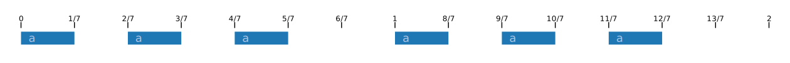
Interestingly, querying a slow 1.5 expression shows that it apparently splits events at cycle boundaries:
Prelude Sound.Tidal.Context> pat = slow 1.5 $ fastFromList ['a', 'a', 'b', 'c'] :: Pattern Char
Prelude Sound.Tidal.Context> drawLine pat
[8 cycles]
|a--a--b-|b---a--a|a----c--|a--a--b-|b---a--a|a----c--|a--a--b-|b---a--a
Prelude Sound.Tidal.Context> stripContext = setContext $ Context []
Prelude Sound.Tidal.Context> putStrLn $ showAll (Arc 0 3) (stripContext pat)
[](0>⅜)|'a'
[](⅜>¾)|'a'
[](¾>1)-1⅛|'b'
[]¾-(1>1⅛)|'b'
[](1⅛>1½)|'c'
[](1½>1⅞)|'a'
[](1⅞>2)-2¼|'a'
[]1⅞-(2>2¼)|'a'
[](2¼>2⅝)|'b'
[](2⅝>3)|'c'
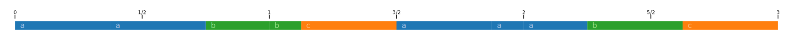
(stripContext is copied from TestUtils.hs.)
Events that straddle a cycle boundary show up as two events with different parts but the same whole. In this example, we have
Both events’ wholes are the same: (¾>1⅛).
I’m not sure if this is intentional or if it’s an artifact of how I’m doing this.
I don’t think it’s important in practice since I would assume the scheduler sends out the event that contains the whole’s onset and ignores the other one. I confirmed using a Tidal REPL (BootTidal.hs) and oscdump that using speed 1.5 sends the OSC messages that you’d expect.
The way I found to work around this is to use defragParts and sort:
Prelude Sound.Tidal.Context> import Data.List (sort)
Prelude Sound.Tidal.Context Data.List> mapM_ print $ sort $ defragParts $ queryArc (stripContext pat) (Arc 0 3)
[](0>⅜)|'a'
[](⅜>¾)|'a'
[](¾>1⅛)|'b'
[](1⅛>1½)|'c'
[](1½>1⅞)|'a'
[](1⅞>2¼)|'a'
[](2¼>2⅝)|'b'
[](2⅝>3)|'c'
ControlPattern and ValueMapTidal examples often start with something like s $ "bd sd bd sd". If we look at its type:
Prelude Sound.Tidal.Context> pat = s $ parseBP_E "bd sd bd sd"
Prelude Sound.Tidal.Context> pat
(0>¼)|s: "bd"
(¼>½)|s: "sd"
(½>¾)|s: "bd"
(¾>1)|s: "sd"
Prelude Sound.Tidal.Context> :t pat
pat :: ControlPattern
A ControlPattern is a pattern that contains events whose values are maps with key/value pairs. It is defined in src/Sound/Tidal/Pattern.hs
type ControlPattern = Pattern ValueMap
type ValueMap = Map.Map String Value
-- | Polymorphic values
data Value = VS { svalue :: String }
| VF { fvalue :: Double }
| VN { nvalue :: Note }
...So each event in the pattern has a value of type ValueMap. As I understand it, the idea is that the various keys in the ValueMap get inserted into the outgoing OSC message. The particular keys to use are defined by SuperDirt, so this is the point where we need to factor in how SuperDirt works.
From SuperDirt/classes/DirtEvent.sc:
DirtEvent {
...
play {
event.parent = orbit.defaultParentEvent;
event.use {
// s and n stand for synth/sample and note/number
~s ?? { this.splitName };
...
}
...
}
splitName {
var s, n;
#s, n = ~sound.asString.split($:);
~s = s.asSymbol;
~n = if(n.notNil) { n.asFloat } { 0.0 };
}So the key s refers to the synth or sample to use.
The Tidal function s is an alias for sound. It’s defined in src/Sound/Tidal/Params.hs.
s :: Pattern String -> ControlPattern
s = sound
sound :: Pattern String -> ControlPattern
sound = grp [mS "s", mF "n"]This is combining a string value with key “s” and a float value with key “n”.
d1 $ s "sd bd hh" sends this over OSC:
e56dd4d3.2f855800 /dirt/play sssfsfsfsiss "_id_" "1" "cps" 0.562500 "cycle" 79.000000 "delta" 0.592592 "orbit" 0 "s" "sd"
e56dd4d3.c7397800 /dirt/play sssfsfsfsiss "_id_" "1" "cps" 0.562500 "cycle" 79.333336 "delta" 0.592593 "orbit" 0 "s" "bd"
e56dd4d4.5eeda000 /dirt/play sssfsfsfsiss "_id_" "1" "cps" 0.562500 "cycle" 79.666664 "delta" 0.592593 "orbit" 0 "s" "hh"
e56dd4d4.f6a1c800 /dirt/play sssfsfsfsiss "_id_" "1" "cps" 0.562500 "cycle" 80.000000 "delta" 0.592593 "orbit" 0 "s" "sd"
e56dd4d5.8e55f000 /dirt/play sssfsfsfsiss "_id_" "1" "cps" 0.562500 "cycle" 80.333336 "delta" 0.592592 "orbit" 0 "s" "bd"
e56dd4d6.260a1000 /dirt/play sssfsfsfsiss "_id_" "1" "cps" 0.562500 "cycle" 80.666664 "delta" 0.592593 "orbit" 0 "s" "hh"d1 $ s "sd sd:1 sd:2 sd:3" sends this over OSC:
e56dd58a.4bf71800 /dirt/play sssfsfsfsiss "_id_" "1" "cps" 0.562500 "cycle" 182.000000 "delta" 0.444445 "orbit" 0 "s" "sd"
e56dd58a.bdbe3800 /dirt/play sssfsfsfsfsiss "_id_" "1" "cps" 0.562500 "cycle" 182.250000 "delta" 0.444445 "n" 1.000000 "orbit" 0 "s" "sd"
e56dd58b.2f855800 /dirt/play sssfsfsfsfsiss "_id_" "1" "cps" 0.562500 "cycle" 182.500000 "delta" 0.444444 "n" 2.000000 "orbit" 0 "s" "sd"
e56dd58b.a14c7000 /dirt/play sssfsfsfsfsiss "_id_" "1" "cps" 0.562500 "cycle" 182.750000 "delta" 0.444445 "n" 3.000000 "orbit" 0 "s" "sd"
e56dd58c.13139000 /dirt/play sssfsfsfsiss "_id_" "1" "cps" 0.562500 "cycle" 183.000000 "delta" 0.444444 "orbit" 0 "s" "sd"
e56dd58c.84daa800 /dirt/play sssfsfsfsfsiss "_id_" "1" "cps" 0.562500 "cycle" 183.250000 "delta" 0.444445 "n" 1.000000 "orbit" 0 "s" "sd"
e56dd58c.f6a1c800 /dirt/play sssfsfsfsfsiss "_id_" "1" "cps" 0.562500 "cycle" 183.500000 "delta" 0.444444 "n" 2.000000 "orbit" 0 "s" "sd"
e56dd58d.6868e000 /dirt/play sssfsfsfsfsiss "_id_" "1" "cps" 0.562500 "cycle" 183.750000 "delta" 0.444445 "n" 3.000000 "orbit" 0 "s" "sd"So for e.g. snare drum samples, there are several snare drums to choose from, and this is cycling through the first four of them.
You see the operator (#) in Tidal examples a lot, such as sound "bd*8" # pan rand. It’s an alias for (|>), which is one of the pattern union operators. From Core.hs:
-- Backward compatibility - structure from left, values from right.
(#) :: Unionable b => Pattern b -> Pattern b -> Pattern b
(#) = (|>)
(|> ) :: Unionable a => Pattern a -> Pattern a -> Pattern a
a |> b = flip union <$> a <* bSo it takes the events from the left pattern, and does the ValueMap union with the values from the pattern on the right.
So one reason ControlPatterns are interesting is that you can create individual patterns for different parameters and then combine them into one stream of events.
Prelude Sound.Tidal.Context> stripContext = setContext $ Context []
Prelude Sound.Tidal.Context> putStrLn $ showAll (Arc 0 3) $ stripContext $ (s $ parseBP_E "bd sd hh") # (slow 3 $ pan $ parseBP_E "0.2 0.5 0.7")
[](0>⅓)|pan: 0.2f, s: "bd"
[](⅓>⅔)|pan: 0.2f, s: "sd"
[](⅔>1)|pan: 0.2f, s: "hh"
[](1>1⅓)|pan: 0.5f, s: "bd"
[](1⅓>1⅔)|pan: 0.5f, s: "sd"
[](1⅔>2)|pan: 0.5f, s: "hh"
[](2>2⅓)|pan: 0.7f, s: "bd"
[](2⅓>2⅔)|pan: 0.7f, s: "sd"
[](2⅔>3)|pan: 0.7f, s: "hh"
This is a little more succinct to express in Tidal proper. You can write it as
tidal> s "bd sd hh" # (slow 3 $ pan "0.2 0.5 0.7")or
tidal> s "bd sd hh" # pan "{0.2 0.5 0.7}%1"You can actually boot a live Tidal from ghci and get a prompt:
$ ghci
GHCi, version 8.10.7: https://www.haskell.org/ghc/ :? for help
Loaded package environment from /.../.ghc/x86_64-darwin-8.10.7/environments/default
Prelude> :script BootTidal.hs
[TidalCycles version 1.7.8]
Installed in /.../.cabal/store/ghc-8.10.7/tdl-1.7.8-5d5b197d/share
Listening for external controls on 127.0.0.1:6010
tidal> Waiting for SuperDirt (v.1.7.2 or higher)..
tidal>
tidal> s "a b c"
(0>⅓)|s: "a"
(⅓>⅔)|s: "b"
(⅔>1)|s: "c"Either run ghci and then :script BootTidal.hs, or run ghci -ghci-script BootTidal.hs.
You can use oscdump from liblo to see what messages are being sent out:
$ ./oscdump 57120Then in the Tidal REPL:
$ ghci -ghci-script BootTidal.hs
GHCi, version 8.10.7: https://www.haskell.org/ghc/ :? for help
Loaded package environment from /.../.ghc/x86_64-darwin-8.10.7/environments/default
[TidalCycles version 1.7.8]
Installed in /.../.cabal/store/ghc-8.10.7/tdl-1.7.8-5d5b197d/share
Listening for external controls on 127.0.0.1:6010
Loaded GHCi configuration from BootTidal.hs
tidal> Waiting for SuperDirt (v.1.7.2 or higher)..
tidal>
tidal> d1 $ s "bd"You see in the running oscdump:
e520f7d6.950bd000 /dirt/play sssfsfsfsiss "_id_" "1" "cps" 0.562500 "cycle" 47.000000 "delta" 1.777778 "orbit" 0 "s" "bd"
e520f7d6.faaf9a8b /dirt/handshake
e520f7d8.5c284800 /dirt/play sssfsfsfsiss "_id_" "1" "cps" 0.562500 "cycle" 48.000000 "delta" 1.777778 "orbit" 0 "s" "bd"
e520f7d8.fae3e6c3 /dirt/handshakeAnother example:
tidal> d1 $ s "bd" + (n "1 2 3")
in oscdump:
e520f856.950bd000 /dirt/play sssfsfsfsfsiss "_id_" "1" "cps" 0.562500 "cycle" 119.000000 "delta" 0.592593 "n" 1.000000 "orbit" 0 "s" "bd"
e520f857.26c8a372 /dirt/handshake
e520f857.2cbff800 /dirt/play sssfsfsfsfsiss "_id_" "1" "cps" 0.562500 "cycle" 119.333336 "delta" 0.592593 "n" 2.000000 "orbit" 0 "s" "bd"
e520f857.c4742000 /dirt/play sssfsfsfsfsiss "_id_" "1" "cps" 0.562500 "cycle" 119.666664 "delta" 0.592593 "n" 3.000000 "orbit" 0 "s" "bd"
e520f858.5c284800 /dirt/play sssfsfsfsfsiss "_id_" "1" "cps" 0.562500 "cycle" 120.000000 "delta" 0.592592 "n" 1.000000 "orbit" 0 "s" "bd"
e520f858.f3dc6800 /dirt/play sssfsfsfsfsiss "_id_" "1" "cps" 0.562500 "cycle" 120.333336 "delta" 0.592593 "n" 2.000000 "orbit" 0 "s" "bd"
e520f859.2854de7e /dirt/handshake
e520f859.8b909000 /dirt/play sssfsfsfsfsiss "_id_" "1" "cps" 0.562500 "cycle" 120.666664 "delta" 0.592593 "n" 3.000000 "orbit" 0 "s" "bd"So this is a good way of sanity checking how patterns are played and what’s the result of combining patterns.
Use this to prevent the handshake messages from showing up:
./oscdump -L 57120 | grep -v dirt.handshakeTidal also has continuous patterns, like sine:
Prelude Sound.Tidal.Context> queryArc (pan sine) (0 :: Arc)
[[]~0>0~|pan: 0.5f]
Prelude Sound.Tidal.Context> queryArc (pan sine) (0.1 :: Arc)
[[]~⅒>⅒~|pan: 0.7938926261462366f]
Prelude Sound.Tidal.Context> queryArc (pan sine) (0.2 :: Arc)
[[]~⅕>⅕~|pan: 0.9755282581475768f]
Prelude Sound.Tidal.Context> queryArc (pan sine) (0.25 :: Arc)
[[]~¼>¼~|pan: 1.0f]
Prelude Sound.Tidal.Context> queryArc (pan sine) (0.5 :: Arc)
[[]~½>½~|pan: 0.5000000000000001f]
Prelude Sound.Tidal.Context> queryArc (pan sine) (0.75 :: Arc)
[[]~¾>¾~|pan: 0.0f]
Prelude Sound.Tidal.Context> queryArc (pan sine) (1.0 :: Arc)
[[]~1>1~|pan: 0.4999999999999999f]
Prelude Sound.Tidal.Context> queryArc (pan sine) (1.25 :: Arc)
[[]~1¼>1¼~|pan: 1.0f]
Prelude Sound.Tidal.Context> queryArc (pan sine) (1.5 :: Arc)
[[]~1½>1½~|pan: 0.5000000000000002f]
Prelude Sound.Tidal.Context> queryArc (pan sine) (1.75 :: Arc)
[[]~1¾>1¾~|pan: 0.0f]
So it varies continuously.
sine is defined in src/Sound/Tidal/Core.hs
These continuous patterns are implemented via sig in Core.hs
-- | Takes a function from time to values, and turns it into a 'Pattern'.
sig :: (Time -> a) -> Pattern aWhen you query over an arc, it gives back the entire arc as the event part extents. It has no whole.
tidal> e = head $ queryArc (pan sine) (Arc 0.5 2)
tidal> whole e
Nothing
tidal> part e
½>2
tidal> value e
pan: 1.0f
NB: sig evaluates the continuous function in the middle of the query arc:
tidal> queryArc (pan sine) (Arc 0.5 0.7)
[[]~½>7/10~|pan: 0.2061073738537635f]
tidal> queryArc (pan sine) (Arc 0.6 0.6)
[[]~⅗>⅗~|pan: 0.2061073738537635f]

To take the panning value for each event of a pattern from a second continuous signal you can do this:
tidal> s "a b c d" # pan sine
(0>¼)|pan: 0.8535533905932737f, s: "a"
(¼>½)|pan: 0.8535533905932737f, s: "b"
(½>¾)|pan: 0.14644660940672627f, s: "c"
(¾>1)|pan: 0.14644660940672616f, s: "d"
It’s sampling the sine in the middle of each event.
You can also use the segment function to first sample the continuous pattern before applying it to the notes:
tidal> s "a b c d" # (pan $ segment 7 sine)
(0>⅐)-¼|pan: 0.716941869558779f, s: "a"
0-(⅐>¼)|pan: 0.9874639560909118f, s: "a"
(¼>²₇)-½|pan: 0.9874639560909118f, s: "b"
¼-(²₇>³₇)-½|pan: 0.890915741234015f, s: "b"
¼-(³₇>½)|pan: 0.5000000000000001f, s: "b"
(½>⁴₇)-¾|pan: 0.5000000000000001f, s: "c"
½-(⁴₇>⁵₇)-¾|pan: 0.10908425876598515f, s: "c"
½-(⁵₇>¾)|pan: 1.253604390908819e-2f, s: "c"
(¾>⁶₇)-1|pan: 1.253604390908819e-2f, s: "d"
¾-(⁶₇>1)|pan: 0.28305813044122086f, s: "d"
tidal> filterEvents eventHasOnset $ s "a b c d" # (pan $ segment 7 sine)
(0>⅐)-¼|pan: 0.716941869558779f, s: "a"
(¼>²₇)-½|pan: 0.9874639560909118f, s: "b"
(½>⁴₇)-¾|pan: 0.5000000000000001f, s: "c"
(¾>⁶₇)-1|pan: 1.253604390908819e-2f, s: "d"

I confirmed with oscdump that this is effectively only applying the panning value at each note onset. The events without onsets don’t get sent out over OSC.
See http://tidalcycles.org/docs/reference/sampling/#segment for an example of segment which is similar to this.
We can use the following to check how the expressions are being parenthesized:
ghci -ddump-splices -XTemplateHaskell -ghci-script BootTidal.hs
...
tidal> $([| s "1 2 3 4" # pan sine # amp square # speed tri |])
<interactive>:17:3-55: Splicing expression
[| s "1 2 3 4" # pan sine # amp square # speed tri |]
======>
(((s "1 2 3 4" # pan sine) # amp square) # speed tri)
...So it looks like (#) is left associative. Function application always binds more tightly than operators, so that’s why we don’t need brackets between the #s.
tidal> $([| slow 3 $ s "1 2 3 4" # pan sine # amp square # speed tri |])
<interactive>:24:3-64: Splicing expression
[| slow 3 $ s "1 2 3 4" # pan sine # amp square # speed tri |]
======>
(slow 3 $ (((s "1 2 3 4" # pan sine) # amp square) # speed tri))
...And using slow in this way operates on everything to its right (which I guess is to be expected due to the $).
UI.hsUI.hs contains the higher-level pattern manipulation functions. I’m not super interested in documenting all of these, but I’ll review a few for completeness.
“rand generates a continuous pattern of (pseudo-)random numbers between 0 and 1.”
tidal> sound "bd*8" # pan rand
(0>⅛)|pan: 0.1573922149837017f, s: "bd"
(⅛>¼)|pan: 0.8002497870475054f, s: "bd"
(¼>⅜)|pan: 0.5694582536816597f, s: "bd"
(⅜>½)|pan: 0.6965191215276718f, s: "bd"
(½>⅝)|pan: 0.8397923950105906f, s: "bd"
(⅝>¾)|pan: 0.412840036675334f, s: "bd"
(¾>⅞)|pan: 0.7543692551553249f, s: "bd"
(⅞>1)|pan: 0.6971595510840416f, s: "bd"
The infamous jux takes a function and a pattern; it puts one copy of the pattern in the left channel, and another copy of the pattern in the right channel with the function applied.
tidal> jux rev $ s "sd bd oh ch"
(0>¼)|pan: 0.0f, s: "sd"
(0>¼)|pan: 1.0f, s: "ch"
(¼>½)|pan: 0.0f, s: "bd"
(¼>½)|pan: 1.0f, s: "oh"
(½>¾)|pan: 0.0f, s: "oh"
(½>¾)|pan: 1.0f, s: "bd"
(¾>1)|pan: 0.0f, s: "ch"
(¾>1)|pan: 1.0f, s: "sd"
shuffle divides a cycle up and randomly permutes the parts.
tidal> shuffle 4 $ s "sd bd oh ch"
(0>¼)|s: "sd"
(¼>½)|s: "bd"
(½>¾)|s: "oh"
(¾>1)|s: "ch"
There’s lots more to explore in UI.hs. It’s documented on hackage.
BootTidal.hsThe BootTidal.hs starts up Tidal and sets up several of the convenience aliases that make it easier to write code live.
tidal here refers to the variable that’s returned by startTidal.
p = streamReplace tidal
...
hush = streamHush tidal
mute = streamMute tidal
unmute = streamUnmute tidal
...
solo = streamSolo tidal
...
setcps = asap . cps
getcps = streamGetcps tidal
...
d1 = p 1 . (|< orbit 0)
d2 = p 2 . (|< orbit 1)
d3 = p 3 . (|< orbit 2)
...So that’s it. Hopefully that was helpful if you’re trying to understand Tidal’s codebase or to use it from ghci. Now I’m off to make some music!
Live code with Tidal Cycles | Tidal Cycles
https://tidalcycles.org/
Types in tidal-cycles
https://www.imn.htwk-leipzig.de/~waldmann/etc/untutorial/tc/types/
What is a pattern? - TidalCycles userbase
https://userbase.tidalcycles.org/index.php/What_is_a_pattern%3F
Tidal Adventures. Introduction | by Carsten Heisterkamp | Medium
https://heisterkamp.medium.com/tidal-adventures-ab627f05ef7c
tidal: Pattern language for improvised music
https://hackage.haskell.org/package/tidal
This document was built from the following git commit:
v1 (0a55b14425636ae2b3b041314f9c714bbe4afd23), 2022-01-05
Version history
v1 (0a55b14425636ae2b3b041314f9c714bbe4afd23), 2022-01-05